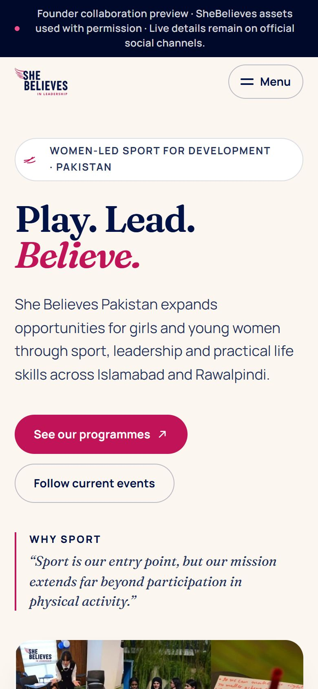
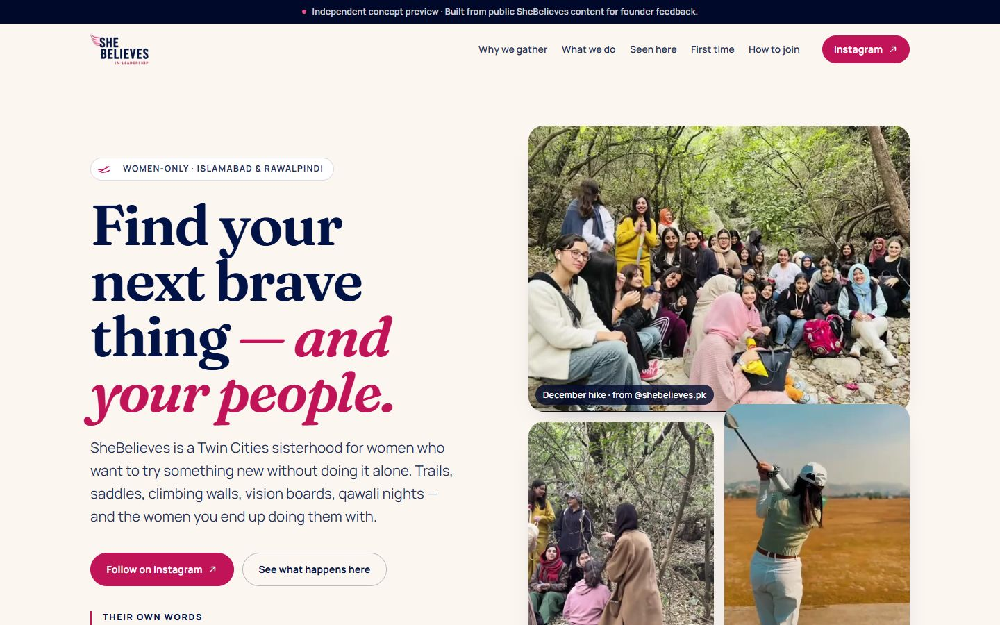
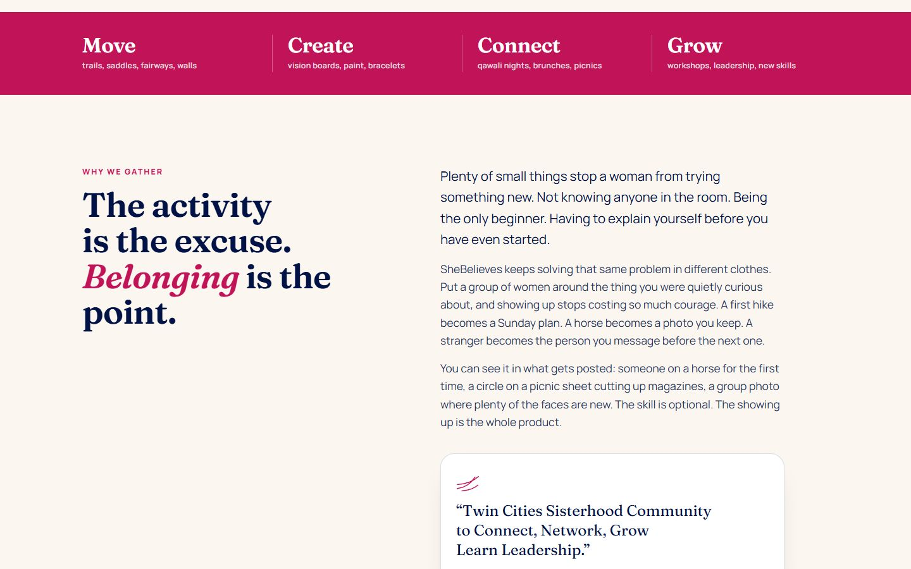
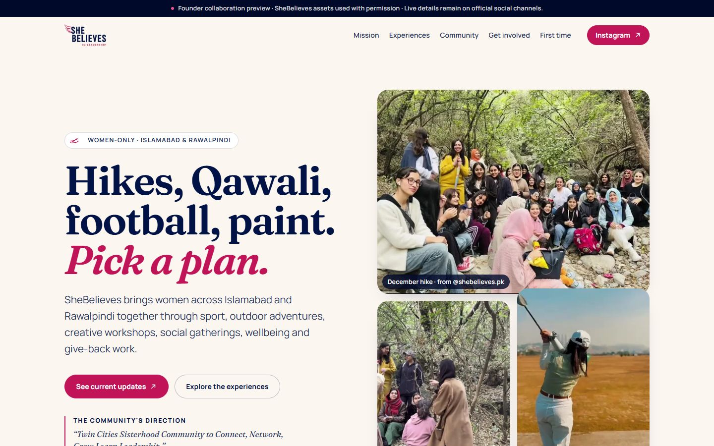
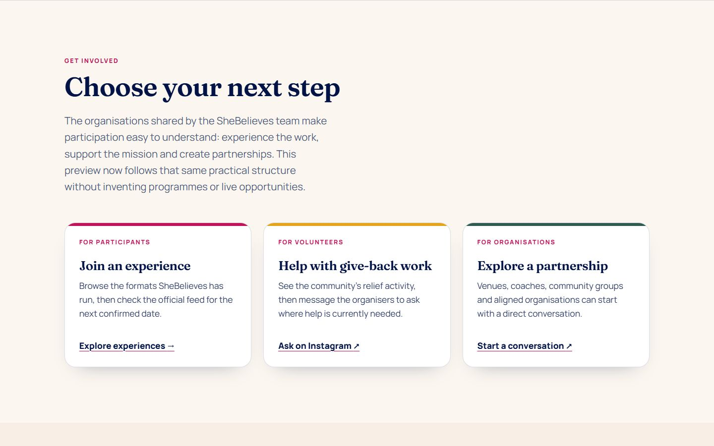
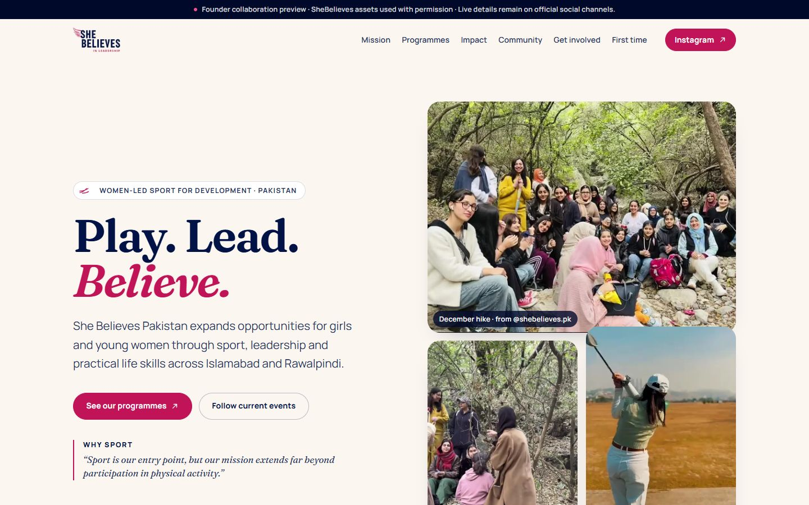
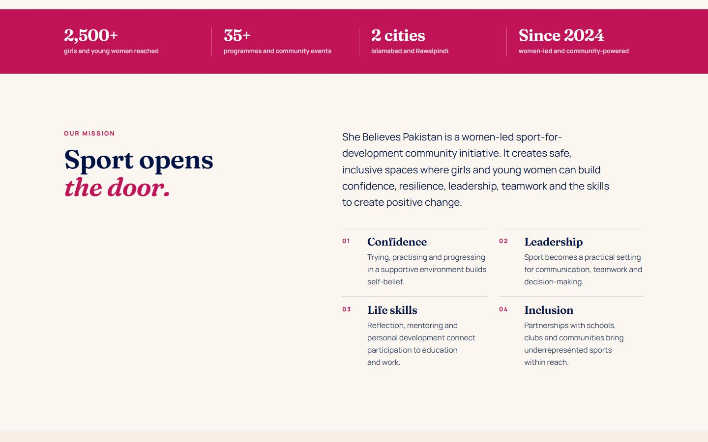
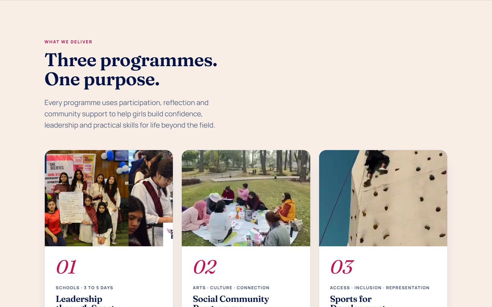

02Content & frontend · Completed website project
From mission to participation.
Bringing the programmes, community and joining paths of SheBelieves Pakistan into one clear website, refined with the founder over four versions.
- Project
- Founder collaboration
- Role
- Content structure & frontend build
- Deliverable
- Responsive single-page website

The brief
How does a first-time visitor get from “What is this?” to “How can I take part?”
SheBelieves Pakistan is a women-led sport-for-development initiative in Islamabad and Rawalpindi. Its website needs to explain the mission while helping girls, parents and partners find a way in.
- 01Lead with the mission
- 02Make three programmes easy to tell apart
- 03Turn interest into a clear joining path
Writing
From a social invitation to the mission.
The first draft sold the activities. Founder feedback moved the message to what the organisation exists to do.
Find your next brave thing — and your people.
Play. Lead. Believe.
The organisation’s own line replaced a borrowed social pitch.
SheBelieves is a Twin Cities sisterhood for women who want to try something new without doing it alone. Trails, saddles, climbing walls, vision boards, qawali nights — and the women you end up doing them with.
She Believes Pakistan expands opportunities for girls and young women through sport, leadership and practical life skills across Islamabad and Rawalpindi.
Six ways in
Three programmes. One purpose.
Start with the mission
“Play. Lead. Believe.” sets the direction. The page explains the initiative before asking anyone to get involved.
Make the programmes distinct
Leadership through Sport, the Social Community Programme and Sports for Development each get a clear place.
Connect interest to action
Community examples lead into ways to take part, first-time questions and the real joining route: Instagram first, WhatsApp next.
Design
Use their identity, show their people.
An early research direction proposed Forest and Coral, “brave belonging outdoors”. The build uses the SheBelieves logo and colours instead, with real community photography.
#011246Headlines and navigation#C11458Actions and emphasis#FBF6EFReading ground#D99340Warm accents
Real frames, credited
Eight community photographs, each linking to its exact public source post. No stock imagery.
Verified figures only
The impact strip carries 2,500+ girls and young women, 35+ programmes and events, two cities, since 2024.
Editorial, not corporate
An expressive serif and a warm paper ground keep the page closer to a community than an NGO report.
Development
Hand-built and checked on every build.
A static site with no framework and no runtime dependencies, so the founder gets a fast page that is easy to hand over.
- Vite
- TypeScript
- Semantic HTML
- Hand-written CSS
- GitHub Pages
What it does
- Sticky, keyboard-accessible header with a mobile menu
- Three core programmes and six activity lanes
- Community section linking each frame to its source post
- Registration path: discover on Instagram → WhatsApp → attend
How it was checked
- A content and integrity check gates every build
- Strict TypeScript typecheck
- Live event details stay on the team’s official channels
Evolution
Four versions in three weeks.
Each version was published for founder review. The structure stayed; the message and imagery moved closer to the organisation.
Concept preview
“Find your next brave thing — and your people.”
Built from public SheBelieves content for founder feedback. An activity-led page: why women gather, six ways in and real frames from the feed.
- 6 sections
- The activity is the excuse
- Six ways in
- Eight frames from the feed
- Can I come alone?

Hero 
Why we gather: the activity-led pitch Founder reference direction
“Hikes, Qawali, football, paint. Pick a plan.”
The founder’s reference sites set a more practical structure: experience the work, support the mission, create partnerships.
- 7 sections
- Choose your next step
- Six ways in → Choose what feels like you

Hero 
New: a next step for participants, volunteers and organisations Programmes and impact
“Play. Lead. Believe.”
The mission leads. Verified impact figures, three named programmes and the real joining route arrive.
- 9 sections
- Impact strip
- Three programmes. One purpose.
- Built locally. Growing nationally.
- Instagram first. WhatsApp next.
- Why we gather → Sport opens the door

Hero 
New: the impact strip and a mission-first opening Instagram hero and programme redesign
Real programme photography from the community’s Instagram replaces the hike collage, and each programme card gets its own image.
- 9 sections
- Hero photography
- Programme cards
- Participation section tightened
Hero 
New: a photograph on every programme card
The result
A working website visitors can explore.
The deliverable brings the introduction, programmes, community and participation guidance into one responsive page, shared with the founder as a collaboration preview.
Ahsan: content structure and frontend build. Founder collaboration preview, shared with permission. The portfolio presentation was prepared with AI assistance.
No increase in participation, enquiries or revenue is claimed. Community photography and organisation content remain credited to their original sources.